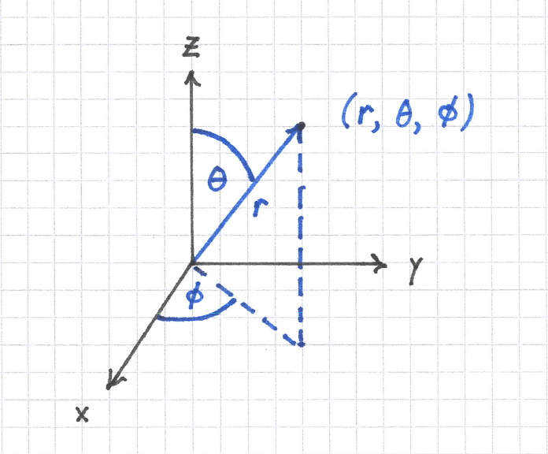
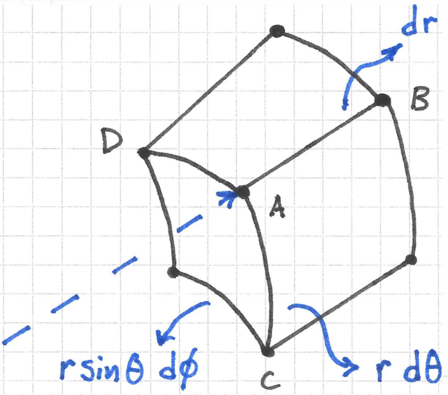
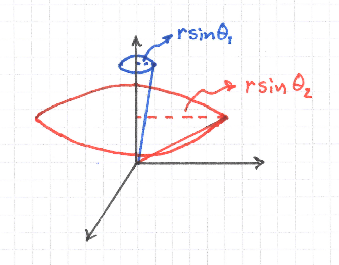
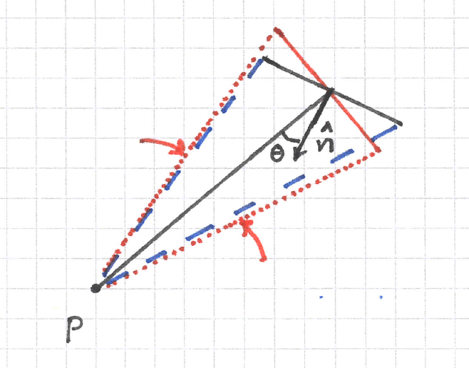
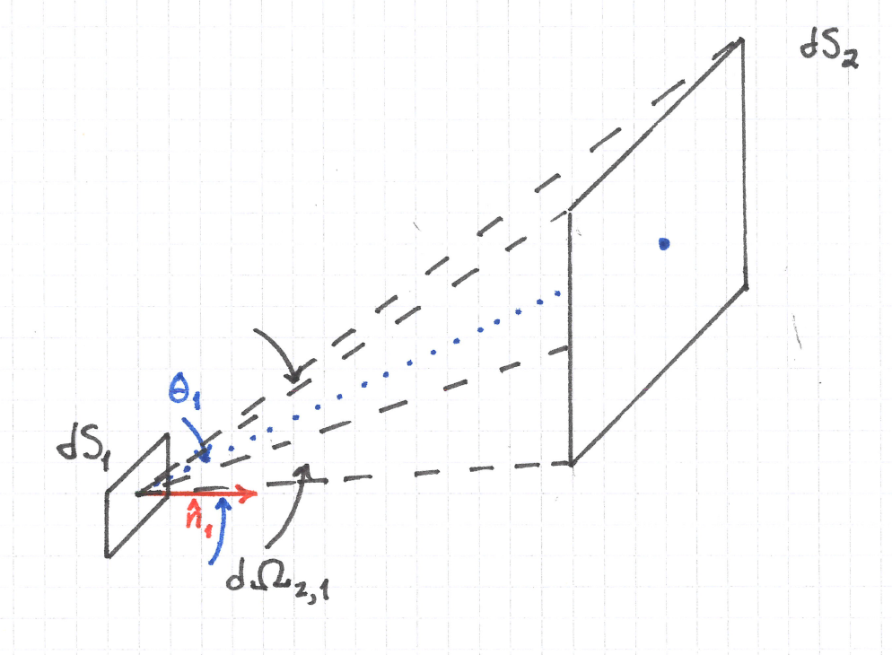
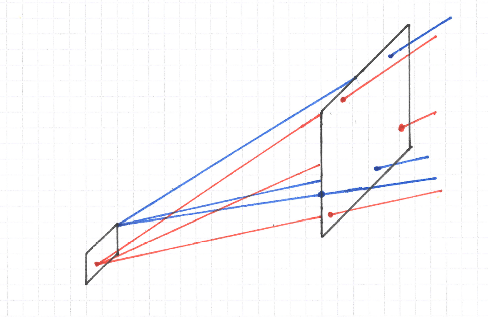

A Primer on the Mathematics behind Radiometry
I have two projects at the moment that involve modeling radiometric quantities in optical systems. At the outset of these projects I felt that I needed to refresh my knowledge of the basics. This post contains my notes about the topics that I think form the mathematical foundation of radiometry.
Spherical Coordinate Systems
Radiometric models are most naturally constructed in spherical coordinate systems. A spherical coordinate system is illustrated below.

In the above illustration, I use the physicist's notation to denote:
- \( r \) : the radial coordinate
- \( \theta \) : the polar (or zenith) angle
- \( \phi \) : the azimuthal angle
The Differential Volume Element
The differential volume element in spherical coordinates is constructed as follows.

In the figure above, the point \( A \) represents the point \( \left( r, \theta, \phi \right) \) in spherical coordinates.
- The line segment \( AB \) has length \( dr \)
- The arc \( AC \) has length \( r \, d \theta \)
- The arc \( AD \) has length \( r \sin \theta \, d \phi \)
The differential volume element therefore is
$$ dV = r^2 \sin \theta \, dr \, d \theta \, d \phi $$.
The reason for the \( \sin \theta \) term is that the ray from the origin to the point \( \left( r, \theta, \phi \right) \) traces out a circle of radius \( r \sin \theta \) when I let \( \phi \) vary from 0 to \( 2 \pi \) as illustrated below:

Solid Angle
A central concept in radiometry is the idea of the solid angle. Solid angle is the equivalent to angle in 3D space and is represented by the Greek letter \( \Omega \).
We use solid angle to describe the apparent size of a surface as reviewed from some point in space. For a differential surface patch that we denote \( dS \) at a distance \( r \) from the point of observation \( P \), we say that the differential solid angle subtended by the patch at \( P \) is
$$ d \Omega = \sin \theta \, d \theta \, d \phi $$.
A good heuristic to remember this quantity is to take the volume element in spherical coordinates and divide by \( r^2 \, dr \).
I often see the definition \( \Omega = A / r^2 \), but this applies in the special case when the patch has area \( A \) and is a subset of the surface of a sphere of radius \( r \). More generally, if \( dS' \) represents the projected surface area of a patch, then
$$ d \Omega = \frac{dS'}{r^2} $$.
Why must \( dS' \) be a projected area? The answer is due to an effect known as foreshortening, which will be discussed in the next section.
When the observation point is at the origin and I use spherical coordinates, then I can equate the two expressions above:
$$ d \Omega = \frac{dS'}{r^2} = \sin \theta \, d \theta \, d \phi $$
Foreshortening
If the patch is oriented such that its unit normal vector \( \hat{n} \) is at an angle \( \theta \) to the line-of-sight from the observation point to the patch, then its apparent area will be foreshortened according to the cosine rule:
$$ A' = A \cos \theta $$.
As a result of foreshortening, the solid angle subtended by the patch at \( P \) will appear smaller. This is illustrated in the figure below.

In this figure, the red dotted lines go from \( P \) to the edges of the patch when it is oriented with its normal unit vector parallel to the line-of-sight and the blue dashed lines go from \( P \) to the edges of the patch when it is oriented at an angle \( \theta \) to the line-of-sight. The angle subtended by the red dotted lines is larger than the one subtended by blue dashed lines, so foreshortening effectively reduces the solid angle subtended by the patch.
In differential form, the solid angle of a patch of differential area \( dS \) foreshortened due to observation at an angle \( \theta \) is
$$ d \Omega = \frac{\cos \theta \, dS}{r^2} = \frac{ \left( \hat{r} \cdot \hat{n} \right) dS }{r^2} $$
where \( \hat{r} \) and \( \hat{n} \) are unit vectors.
The solid angle subtended by the patch is obtained by integrating over either expression:
$$ \Omega = \iint_S \frac{\cos \theta \, dS}{r^2} = \iint_S \frac{ \left( \hat{r} \cdot \hat{n} \right) dS }{r^2} $$
Uniformly Sampling Surfaces in Solid Angle
In one of my projects I am working with a rotationally symmetric optical surface that is defined through a recursion relation, but I need a differentiable representation for ray tracing. I obtain this representation by sampling the surface at different polar angles \( \theta \) and fitting the samples with a polynomial or spline.
In some scenarios it is advantageous to uniformly sample the surface in solid angle, rather than angle itself. To achieve this, I uniformly sample \( \cos \theta \) and obtain the values for \( \theta \) by applying an \( \arccos \) function to the samples. In pure Python this looks like the following:
import math num_samples = 8 # Sample directions from the optical axis to directions perpendicular to it. cos_theta = [x / (num_samples - 1) for x in range(num_samples - 1, -1, -1)] assert len(cos_theta) == num_samples theta = [math.acos(x) for x in cos_theta]
The above code produces values for \( \theta \) of [0.0, 0.5410995259571458, 0.7751933733103613, 0.9625507478846871, 1.1278852827212578, 1.2810446253588492, 1.4274487578895312, 1.5707963267948966].
The reason this works is the following: start with the definition of solid angle \( d \Omega = \sin \theta \, d \theta \, d \phi\). Because the surface is rotationally symmetric, integrate over the azimuthal angle to obtain \( \iint_{\phi = 0}^{2 \pi} \sin \theta \, d \theta \, d \phi = 2 \pi \int \sin \theta \, d \theta \).
But \( \sin \theta \, d \theta = -d ( \cos \theta) \), so uniform sampling in \( \cos \theta \) space produces equal-sized rectangles in the Riemann sum that approximates this integral.
Etendue
Etendue (sorry French speakers) is another important quantity in radiometry. Though it is a core quantity of the science, it is actually a purely mathematical construction and does not require any concept of power, detector, or light source. It is related to solid angle, but is easy to confuse with the above expressions for solid angle because two different patches are involved in its construction, not one.
Let \( dS_1 \) and \( dS_2 \) represent these two different surface patches. They are differential patches but drawn unrealistically large in the figure below for ease of understanding. Assume that the solid angle subtended by surface 2 as viewed from the center of surface 1 is \( d \Omega_{2,1} \). Furthermore let \( \theta_1 \) represent the angle between the unit normal vector to \( dS_1 \) and the center of the solid angle \( d \Omega_{2,1} \). Similarly, let \( \theta_2 \) represent the angle between the unit normal vector to \( dS_2 \) and the center of the solid angle \( d \Omega_{1,2} \). Finally, assume these patches sit in a medium with refractive index \( n \).

Etendue is defined as:
$$ dG = n^2 \, \cos \theta_1 \, dS_1 \, d \Omega_{2,1} $$
Conservation of Etendue
We can prove that this quantity is conserved by noting that \( d \Omega_{2,1} = \frac{\cos \theta_2 \, dS_2} {r^2} \), or
$$\begin{eqnarray} dG &=& n^2 \cos \theta_1 \, dS_1 \, d \Omega_{2,1} \\ &=& n^2 \cos \theta_1 \, dS_1 \frac{\cos \theta_2 \, dS_2}{r^2} \\ &=& n^2 \frac{\cos \theta_1 \, dS_1}{r^2} \cos \theta_2 \, dS_2 \\ &=& n^2 \, d \Omega_{1, 2} \cos \theta_2 \, dS_2 \end{eqnarray}$$.
So it does not matter if we measure etendue from surface 1 to surface 2, or from surface 2 to surface 1; it is the same for any two patches.
Intuitively, the conservation of etendue is just a fancy way of counting the number of lines that pass through any two patches in space. When viewed this way, it is obvious that the number of lines that pass through both patches must be the same regardless of whether we look from patch 1 to patch 2 or from patch 2 to patch 1.

Phase Space Representation
Rigorously speaking, conservation of etendue is a result of Liouville's theorem. Let each ray be represented in a four dimensional phase space where two dimensions are on a reference surface and the remaining two represent the two degrees of freedom in the optical momentum vector \( \vec{p} = n \hat{s} \) of Hamiltonian optics. The volume of the phase space spanned by all the rays intersecting this surface is a conserved quantity.
Etendue becomes an optical quantity when I assert that the lines represent rays that carry some amount of power \( d \Phi \). Strictly speaking, etendue either stays the same or increases, but it cannot decrease. Diffuse scattering is one way that it can increase, but not because scattering simply redirects light rays. Reflection and refraction also redirect light rays, but in these cases etendue is conserved because reflection and refraction are operations that satisfy Liouville's theorem.
Etendue can be related to the second law of thermodynamics. (But how exactly this is done I do not know.)
Comments
Comments powered by Disqus